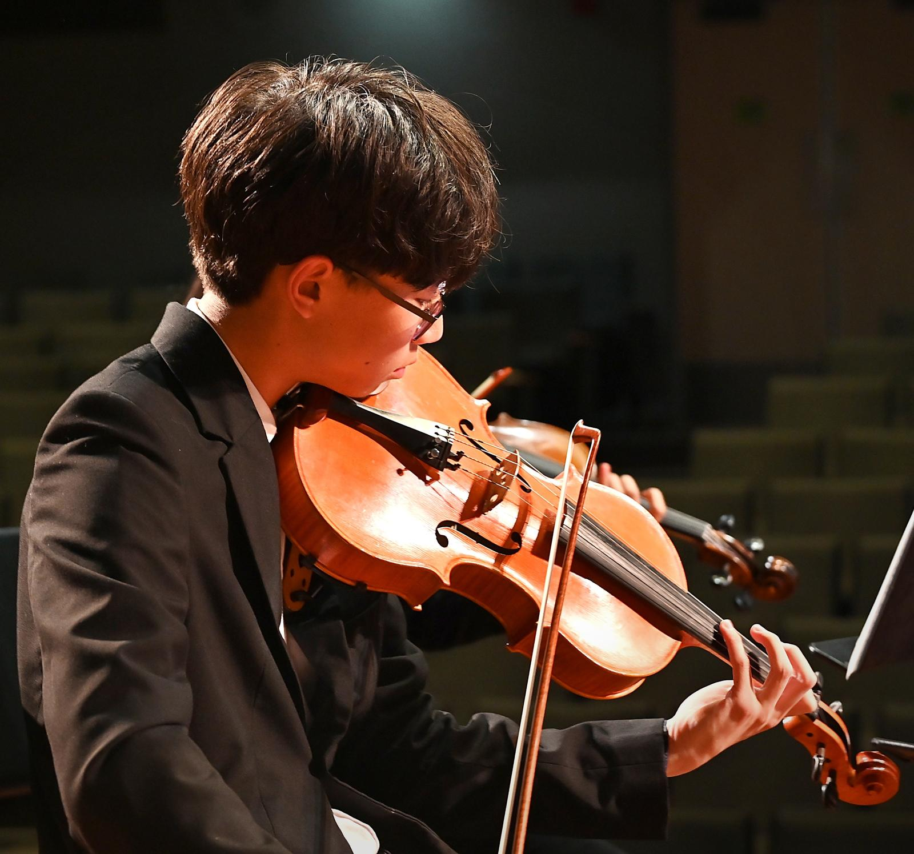
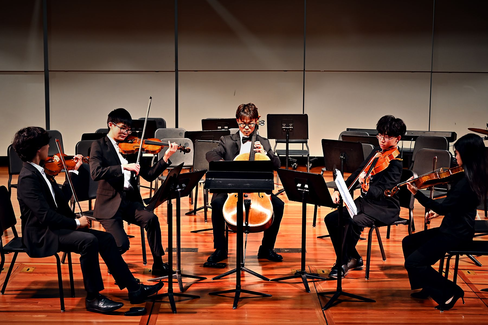
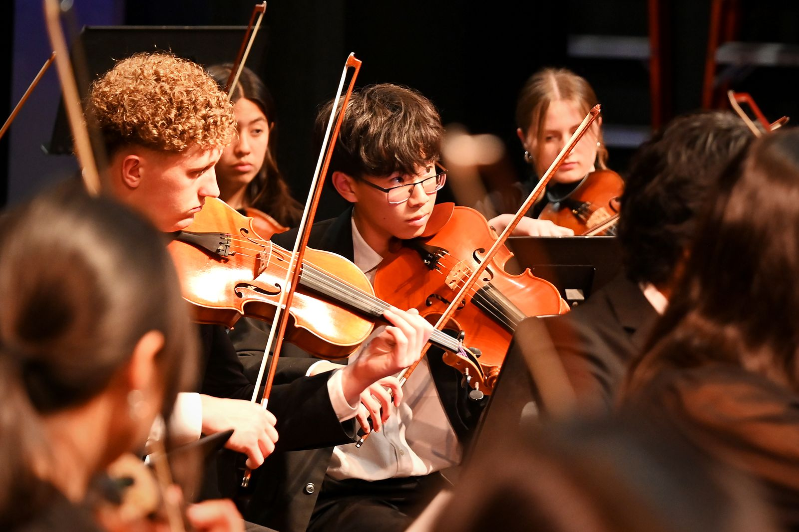
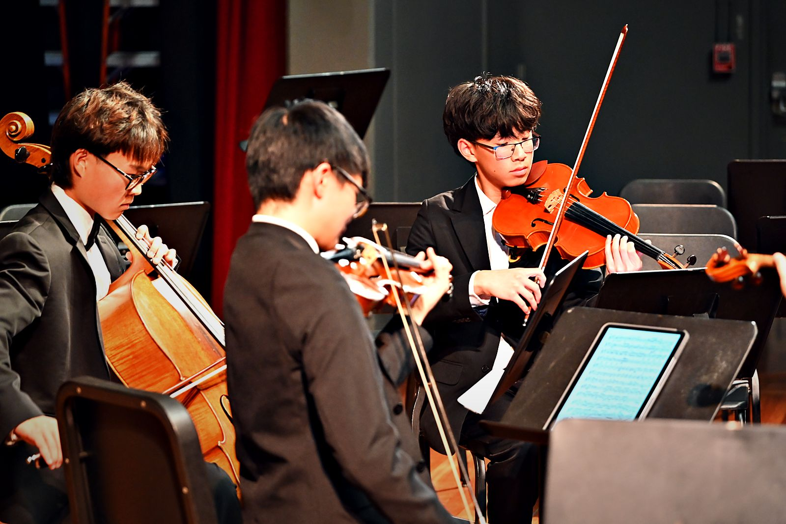
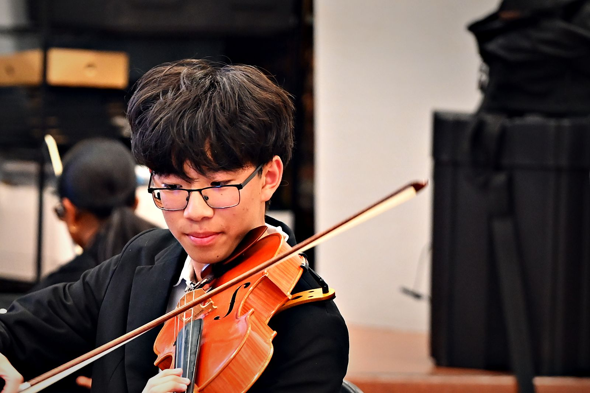
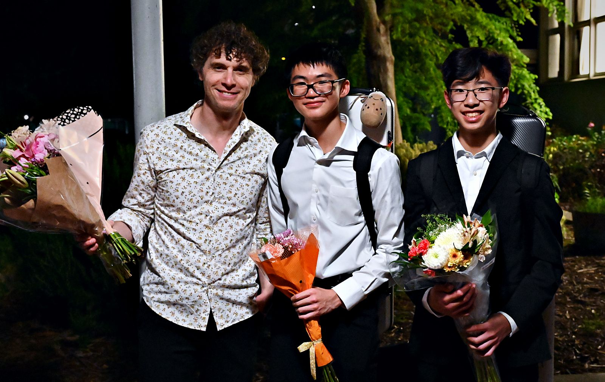
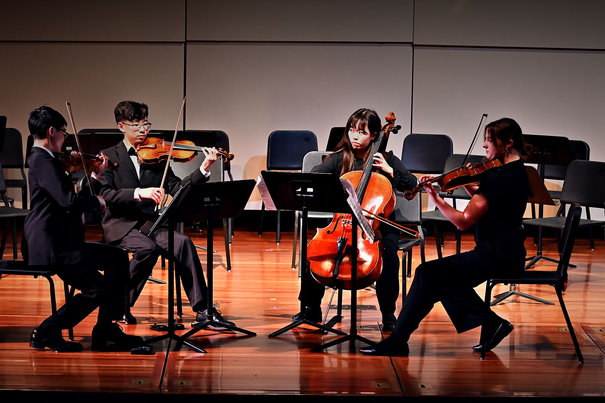

Gavin
Chang
Violist and violinist
from the San Francisco Bay Area
Listen
Mendelssohn, String Quintet in A Major Viola, Senior PACO, Nov 2026
Ravel, String Quartet in F Major Violin, PACO Sinfonia, Mar 2026
Handel, Concerto Grosso, Op. 6 No. 12 in B minor Violin, concertmaster, PACO Sinfonia, Mar 2026
Gallery






About
Gavin Chang is a violist and violinist from the San Francisco Bay Area. A member of Senior PACO, the most advanced ensemble of the Palo Alto Chamber Orchestra, he studies under the tutelage of violist Aaron Rosengaus. He has performed under the baton of Scott Krijnen, Eugene Sor and Jory Fankuchen, and alongside Grammy Award-winning violinist Mads Tolling. He has studied chamber music with Zakarias Grafilo, Benjamin Simon and Samsun Van Loon, and has played in masterclasses for Elizabeth Oakes.
Gavin has played violin for six years and viola for one. During the 2025–26 season, he performed as a violinist in PACO's Sinfonia Orchestra and served as concertmaster for its March concert. He joined Senior PACO as a violist in the fall of 2026.
At Adrian Wilcox High School, Gavin has been a member of the Chamber Orchestra since ninth grade and has served as principal violist since 2025. He is also a PACO Pedagogical Ambassador, coaching younger string players.
Away from the viola, Gavin plays tennis, listens to everything from classical to rap, and is somewhat of a food critic.
Selected repertoire
Chamber music
- MendelssohnString Quintet in A Major, Op. 18
- RavelString Quartet in F Major
Orchestra
- ShostakovichChamber Symphony, Op. 110a
- DvořákSerenade for Strings, Op. 22
- Vaughan WilliamsFantasia on a Theme by Thomas Tallis
- HandelConcerto Grosso, Op. 6 No. 12
- MozartDivertimento in D Major, K. 136
- Mads TollingYggdrasil, Violin Concerto
- Jessie MontgomeryStrum
- Gabriela Lena FrankLeyendas
Contact
Looking for a violist for an event, interested in lessons, or want to play chamber music together? Send a message and you'll hear back within a few days.